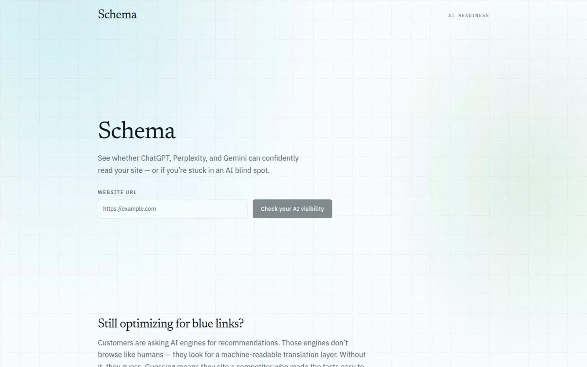
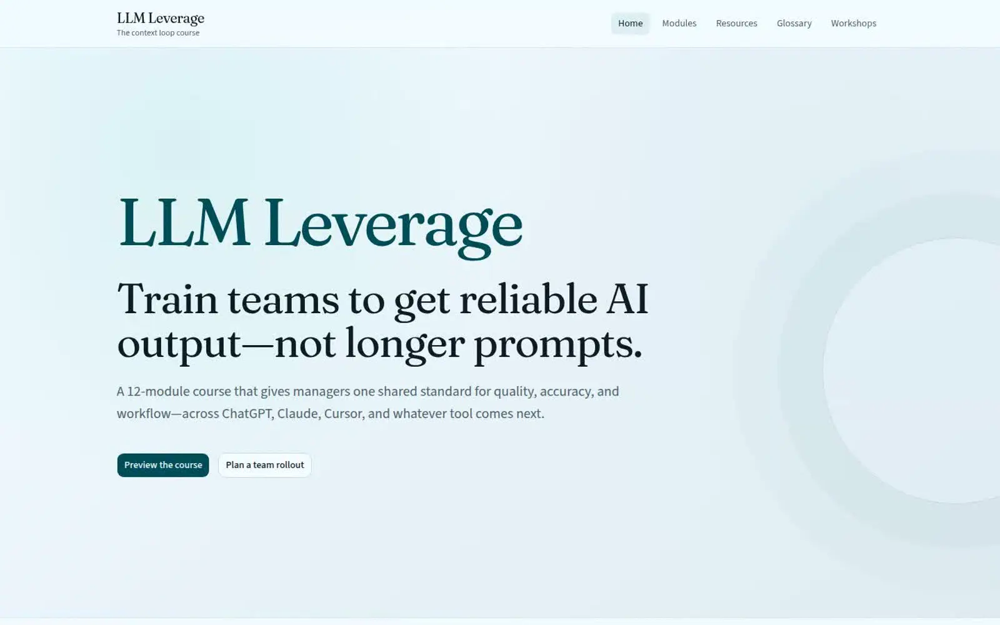
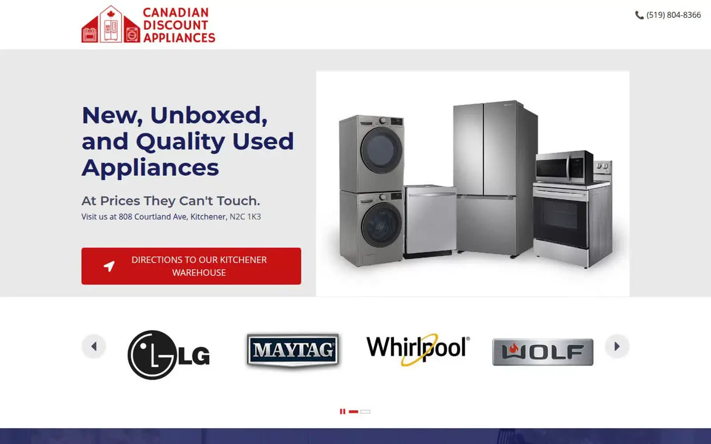

Software at the speed of thought
From thought to working software.
Tell us what should exist. We engineer the intent and context behind it—then coordinated AI agents design, build, and test the system in parallel, while experienced people direct every decision.
Show us how it works See what we've built
Intent and context engineered first. Five coordinated workstreams. One running system.
Thought → working software
Listening
The name
I will create as I speak.
Abracadabra, traced back far enough, is Aramaic — roughly avra kadavra. Not a spell. A description of the actual mechanism: you say what you mean, and something real comes into being.
That's the business, minus the theatrics. Say the process, the exceptions, the words your team already uses, and we turn that description into a running system. The speech is the brief: the intent, the context, the constraints nobody wrote down. The creation is production software, not a mockup.
Most software makes your operation adapt.
The real process survives in inboxes, spreadsheets, and the exceptions experienced people remember.
We build around that reality. Your steps stay intact. The system carries them.
Time travel
It feels like magic.
A conventional software calendar is mostly waiting: for the brief to be understood, for a handoff to land, for one team to finish before the next can start. Remove the waiting and the calendar folds in on itself.
There is no sleight of hand. We front-load the thinking into an engineered brief, then run every downstream workstream at once. The work does not shrink. The gaps between the work disappear.
Discover
Specify
Design
Build
Test
Release
The serial calendar
Each phase waits for the previous one to finish, then waits again for the handoff to be understood. Most of the calendar is dead air between people.
Front-load the thinking
Discovery and specification collapse into one engineered brief: intent, constraints, acceptance criteria, and the context every agent needs before a single file is written.
Run everything at once
With the brief settled, design, build, test, and release stop queueing behind each other. Five workstreams move in parallel against the same specification, and the handoff gaps vanish.
Arrive before you were due
The same scope ships while the conventional plan is still in review. Nothing was skipped. The waiting was removed, and from the outside that feels like magic.
The range
If it runs on a screen, we build it.
Marketing, the application, the model, the customer record, the store. These are not five vendors. They are one operation, read the same way: what must be true, how the work already happens, then a system that ships.
The work named on this page is a sample. It is not the edge of what we will take on.
Digital range / one operation
Campaigns and pages
Answer Engine Optimization
Be the answer AI can verify.
We turn buyer questions into direct answers, clear entities, structured data, and evidence that answer engines can understand. Then we measure what changed.
AEO, GEO, and SEO. One discipline.
Specimen II
Schema
See the gap, then the repair plan. Schema keeps measured scan output separate from generated recommendations, so the result never claims more than the scan observed.
- Kind
- AI-search visibility scorer
- Output
- Measured findings, then generated recommendations
- Live
- schema-two.vercel.app

Selected work
Working systems, already in the world.
Real interfaces. Live links. Each one began as an operation somebody could explain but could not buy off the shelf.

Specimen III
LLM Leverage
Teach the team once. A self-paced course for better answers from any model, plus a workshop path for a rollout. Twelve modules, quiz gated at 75 percent.

Specimen IV
Canadian Discount Appliances
Answer the question that makes the sale. The appliance warehouse leads with condition, warranty, and whether it fits the door, then a delivery you can book. Phone as a close.
The empty plinth is next. The film after that.
What changes when the software fits.
- Your experts stop being the bottleneck.
Customers and new hires get a grounded answer from your science, your product, and your plan, on text or voice, any hour.
- Your best rep can be everywhere you sell.
The talk track, the booking, the pipeline, and a coach on the real book of business. A new person in a new city sells to the standard.
- Interest arrives with a reason attached.
A personal result, the customer's language, a practitioner's name, a next step, a cart.
- You see the move in time to make it.
What a body can do, what a rate will do, which visit is ready to buy, whether AI search can find you. When it can't yet, we've already shown the fix works. See the receipt above.
- A new market is a production run.
Channel, language, and creative from a system that already knows the claims you allow.
- The first yes happens on the screen.
Fit, price, booking, and trust before anyone gets in a car.
- The capability stays when the invoice would have grown.
Answers, agreements, content, and the customer record live on your side of the wall.
- Complexity doesn't get quietly declined.
Everything above is proof we can build, not the edge of what we'll take on. Going deep on intent and context before a line of code gets written is the actual product. It's what lets us say yes to the request other shops pass on.
Reserved. Your operation, however complex, is the next specimen.
Specimen I, on film
Showdesk, in 44 seconds
Ringside entry, review, placements, reports. This is the same footage the sales pack uses. Your team leaves with one of these.
- Runtime
- 44 seconds
- Drive
- The wheel. Scroll slow, it slows.
- More
- The films on file
Read the film sequence
A ringside entry becomes a judge's recording, a secretary's review, final placements, and a report ready for the show team.
Specimen V
Three moves, from the way you work to a system that runs.
Every specimen on this page left the room the same way: as a live system, a film cut from the real screens, and the script a rep says out loud.
- Kind
- The delivery
- Contains
- The live system, the film, and the script, per specimen
- Rule
- Same footage, same claims, no invented numbers
- You walk us through the operation.
The steps, the exceptions, the sentence a good rep already says, however complicated it actually is.
- We build the software around those steps.
We read the intent, hold the context, and write the prompts and the architecture that carry it. AI where it removes a task, a person where the relationship matters.
- You leave with the live system, the film, and the script.
Your team can demo it without us in the room.
Questions operators ask.
What does Abracadabra AI build?
Bespoke software built around how a business already runs: the steps, the exceptions, and the words the team already uses. AI takes a task, people keep the relationship, and the delivery includes the live system, a film, and the script the team runs. Shipped examples include a live-event operations app (Showdesk), an AI-search visibility scorer (Schema), a self-paced LLM course (LLM Leverage), and a warehouse appliance store (Canadian Discount Appliances).
Do you only build software?
No. The same studio ships marketing, applications, machine-learning products, systems of record, stores, and the work that gets a brand found. Software is the method. The surface changes with the operation. Public examples on this page include Showdesk, Schema, LLM Leverage, Canadian Discount Appliances, and PIRX. Other work is named when the client allows it.
What does the name Abracadabra mean?
Traced back far enough, Abracadabra is Aramaic, roughly avra kadavra: I will create as I speak. You describe the process, the exceptions, and the words your team already uses, and that description becomes a running system. The speech is the brief. The creation is production software, not a mockup.
What is the proof behind from zero to scale?
pirx.ca launched with no search history and no answer-engine presence. In the twelve weeks before 2026-09-23, Google Search Console recorded 201K search impressions and 1.1K clicks, with 21.8K of those impressions coming from Google's Generative AI and AI Overviews surface alone, climbing from almost nothing in June to a daily peak over 1,600 by September. One post carried over 5,400 of those AI-surface impressions on its own. AEO, GEO, and SEO were run as one discipline.
How does a project work?
Three moves. You walk us through the operation: the steps, the exceptions, the sentence a good rep already says. We build the software around those steps, with AI where it removes a task and a person where the relationship matters. You leave with the live system, the film, and the script, and your team can demo it without us in the room.
Who is Abracadabra AI for?
Operators and founders whose real process does not fit a product built for someone else's company. Three arrivals: you already have customers and a way of working that no off-the-shelf product was drawn for; you are replacing a pile of tools that each hold a piece of the customer; or you need the product and the way your team sells it in the same delivery. A fourth: you have a problem nobody else wanted to take on because it is too big, too specific, or too dependent on context.
What if a product I can buy already does the job?
We say so and send you there. When it does not, we build the one that does.
Are the wellness assessments you build diagnostic?
No. The clinical-style assessments we have shipped are non-diagnostic. They educate and route a person to a next step. They do not diagnose.
How do I know if my business is ready to put AI to work?
Take the Readiness Check. It scores where the work slows down, whether the data, the workflow, the owner, and the decision can support real work, and how visible the public site is to answer engines. Five to seven minutes, then a thirty-minute working session if you want one. Start at check.abra-ca-dabra.app/check.
Specimen ST
Show us one operation.
Bring the handoffs, exceptions, approvals, and outcome. We will show you the system they imply—or tell you when an existing product already fits.
- Bring
- One operation, in the words your team uses
- Leave
- A clear system shape and the next decision
- Write
- dev@pirx.ca